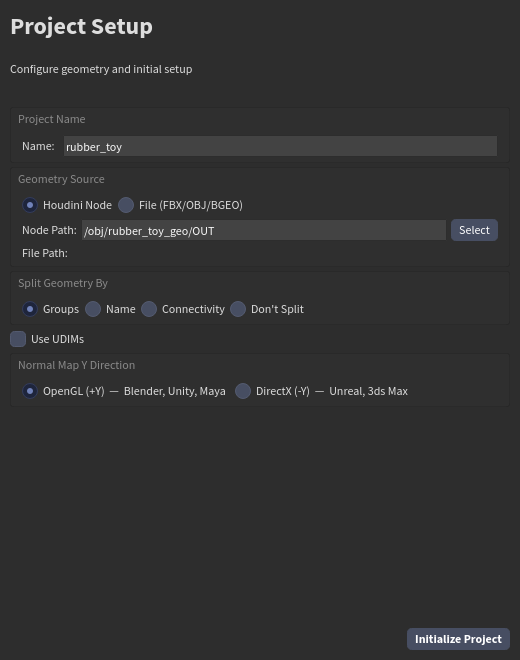
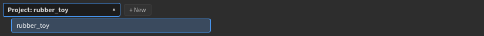
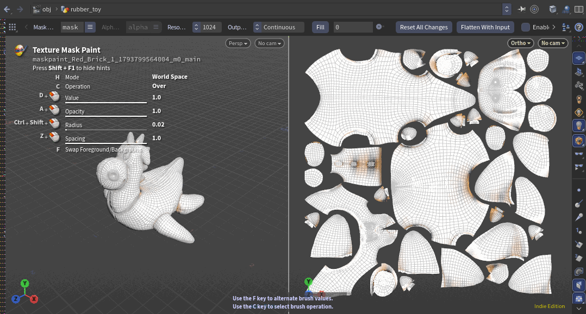
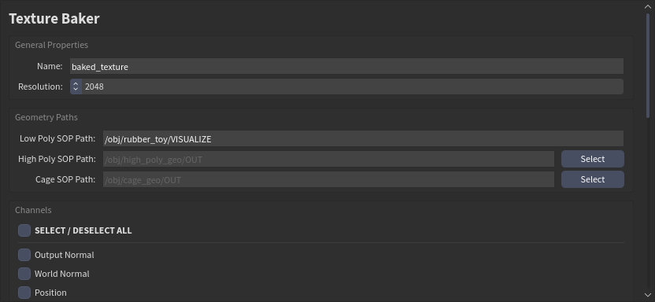
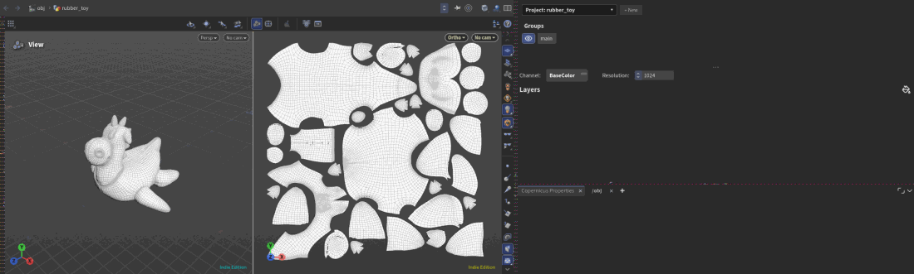
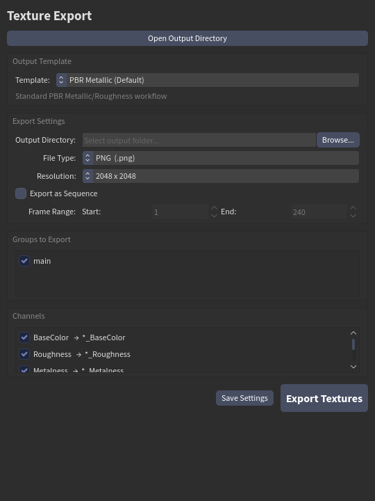

Your first project¶
The whole loop: a project, the baked maps, a few layers, export. Each part has its own page for the details.
1. Create a project¶
A project is one node in /obj that holds the whole texture set: the layer stack, the masks, the bakes. Click Project on the Painter shelf (or New… at the top of the Layers panel).

| Field | What it is |
|---|---|
| Project Name | The name of the project node |
| Geometry Source | A Houdini node (its path, or Select) or a file (FBX, OBJ, BGEO) |
| Split Geometry By | How the mesh is cut into texture sets: by Groups, Name, Connectivity, or Don't Split |
| Use UDIMs | One texture per UV tile (1001, 1002...) |
| Normal Map Y Direction | OpenGL (+Y): Blender, Unity, Maya, Houdini. DirectX (-Y): Unreal, 3ds Max |
The mesh needs UVs and normals. Click Initialize Project.
Each texture set (a group from the split) has its own layer stack. Pick it in Groups at the top of the Layers panel; the eye hides it in the viewer.
Several projects in one hip¶
A hip can hold several projects. Project at the very top of the Layers panel says which one you are on: click it to list them all and pick another. Opening a hip opens the project you used last in it.

2. The 3D and 2D views¶
The viewer is split. On the left is your model; on the right, the 2D view: the same model laid out flat by its UVs, like Substance Painter's 2D view. Everything shows in both, and you can paint in both.

In the 2D view you pan and zoom as in any Houdini view (hold Space and drag with the middle mouse to pan; the wheel zooms towards the pointer). It never rotates, and moving it is not an edit, so it adds nothing to undo. 2D View on the shelf puts it back on its home framing.
3. Bake the mesh maps¶
Click Bake. The baked maps are what generators and smart materials read: curvature for edge wear, occlusion for dirt in the cavities, position for gradients.

Pick the resolution, the low-poly mesh (your project's), optionally a high-poly and a cage, tick the maps and click Bake Textures. Bake at least Position and World Normal, which the projections need. Preview Baked Channel shows a map on the model.
4. Layers¶
The shelf at the bottom is your library. Drag a material onto the Layers panel. Materials are procedural, with controls; Textures are image sets. Drop more, then add masks and filters to them.

The GIF shows a red brick, then a tiger skin over it, a Dirt mask so the tiger only shows in the cavities, and an HSL filter on the tiger. All of that is on Layers, masks and filters.
5. Paint¶
Click a brush on the Brushes shelf: the layer gets a paint mask and you are painting. See Painting.
6. Export¶
Click Export.

| Setting | What it is |
|---|---|
| Template | Which maps and how they are named and packed: PBR Metallic, Unreal Engine 5 (packed ORM), Unity URP/HDRP, Houdini / Mantra |
| Output Directory | Where the files go (Open Output Directory opens it) |
| File Type | PNG, JPEG, EXR or TIFF |
| Resolution | The exported size |
| Merge groups by UDIM tile | On UDIM projects: one file per tile with every texture set in it |
| Export as Sequence | Frames from Start to End, for animated layers |
Export Textures writes them; Save Settings keeps the choice with the project.
Undo¶
Everything you do in the panels is one undo step: Ctrl+Z, Ctrl+Shift+Z, and the panels follow. Moving the views isn't an edit.